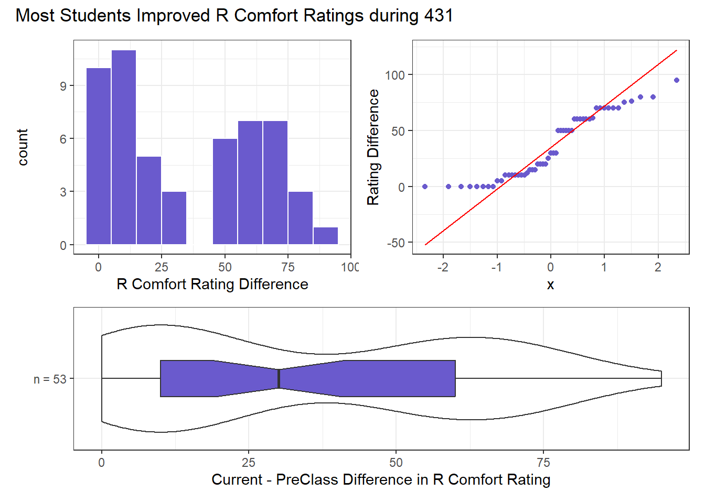
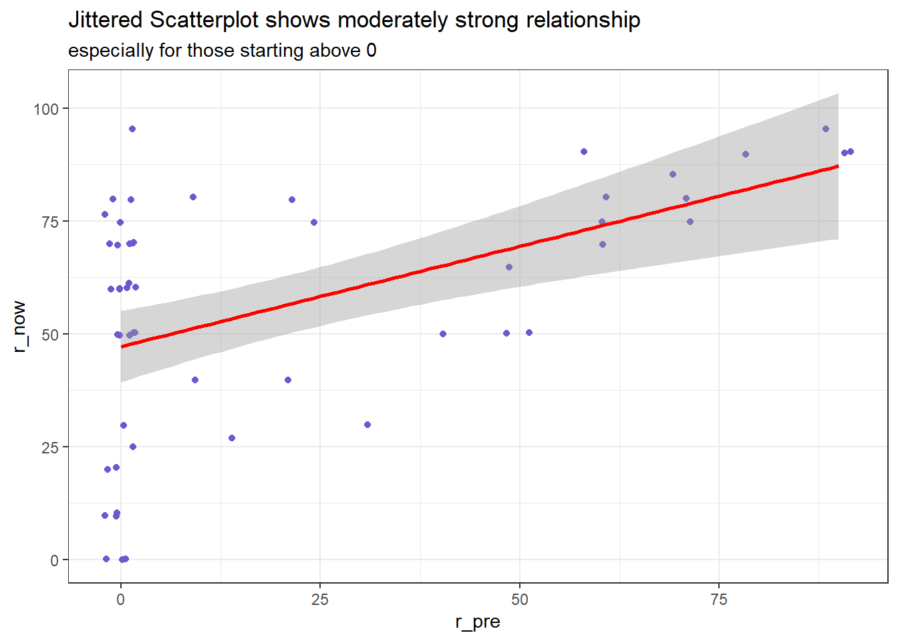
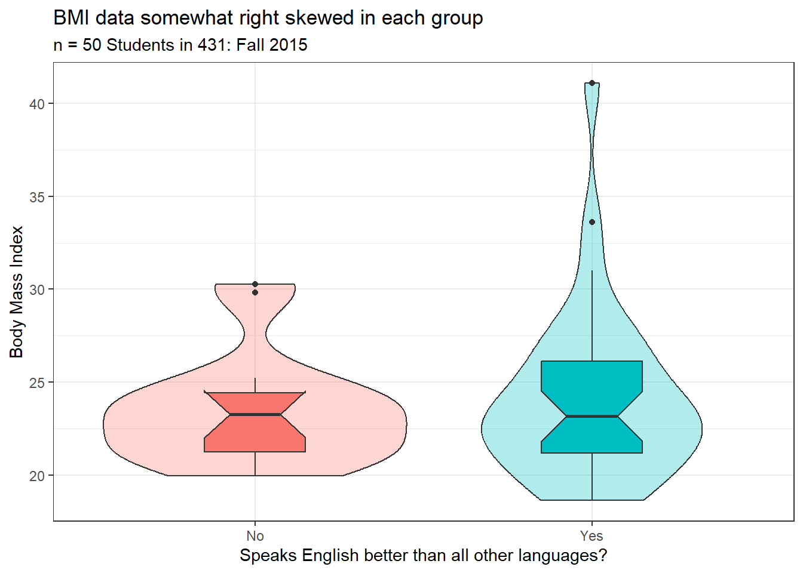
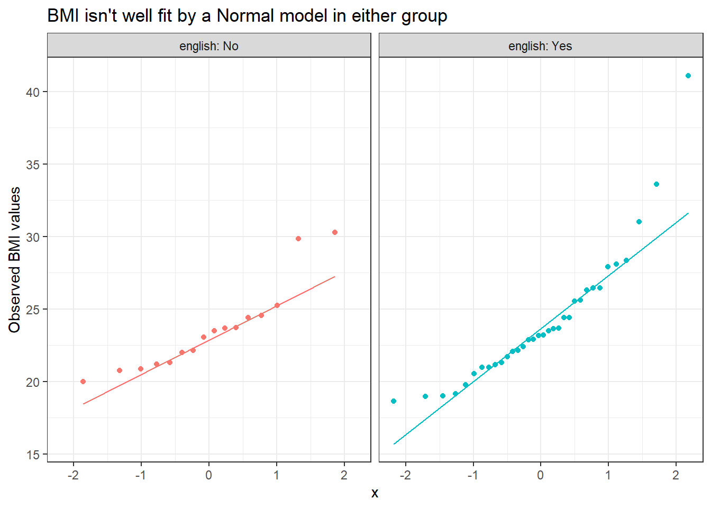
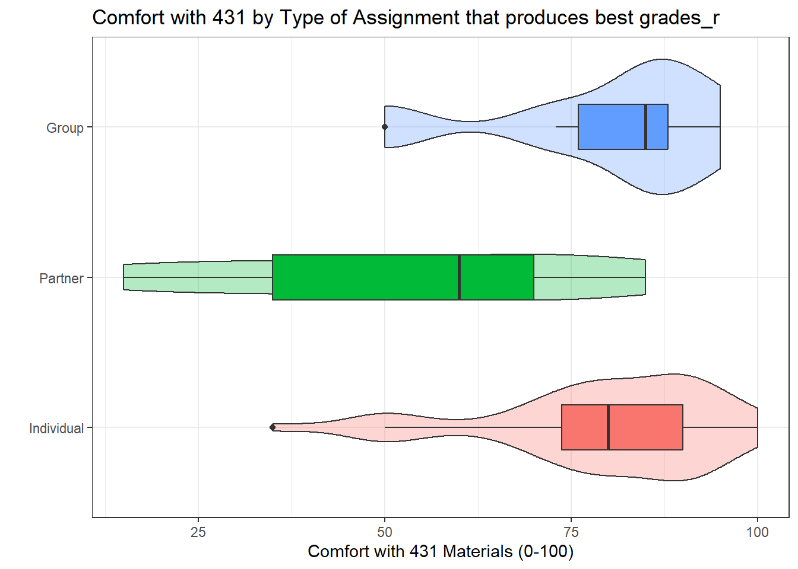
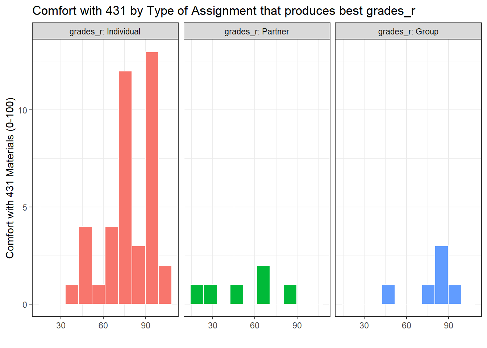
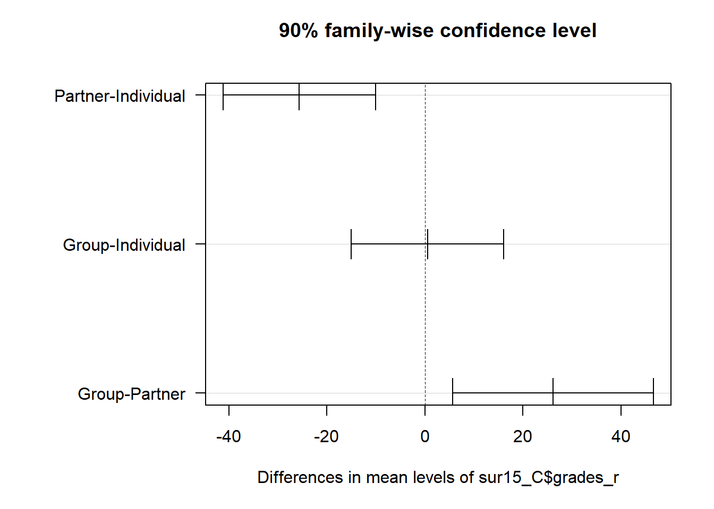
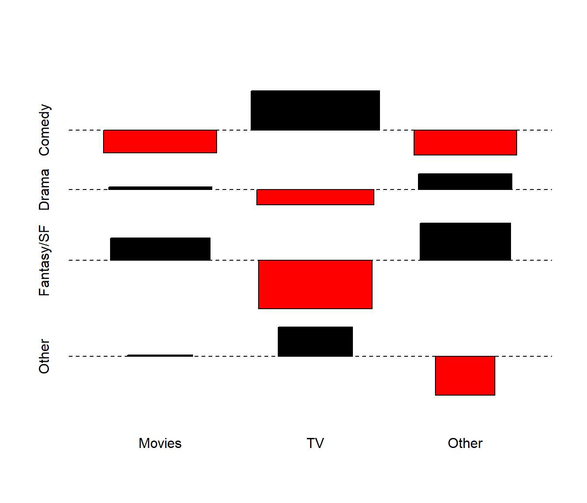
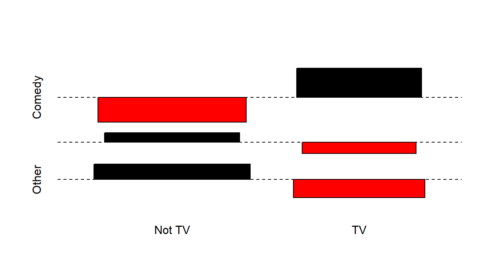

library(broom)
library(Epi)
library(Hmisc)
library(knitr)
library(janitor)
library(mosaic)
library(naniar)
library(patchwork)
library(readxl)
library(xfun)
library(tidyverse)
## Load Love-boost
source("https://raw.githubusercontent.com/THOMASELOVE/431-data/main/data-and-code/Love-boost.R")
## Global options
opts_chunk$set(comment=NA)
theme_set(theme_bw())431 Project B Sample Study 1 Report
Important Reminders from Dr. Love
Remember that each subsection should include at least one complete sentence explaining what you are doing, specifying the variables you are using and how you are using them, and then conclude with at least one complete sentence of discussion of the key conclusions you draw from the current step, and a discussion of any limitations you can describe that apply to the results.
If you want to download the Quarto code I used to create this document, click on the Code button near the title of this Sample Study.
For heaven’s sake, DO NOT use my words included in this example report in your project. Rewrite everything to make it relevant to your situation. Do not repeat my instructions back to me.
1 Setup and Data Ingest
1.1 Initial Setup and Package Loads
1.2 Loading the Raw Data into R
This document demonstrates a variety of things required in your Project B Study 1. We will demonstrate ideas using data from a 2015 class survey, gathered in three data files available on the 431-data website. The files are called:
projectB-study1-demo-survey-2015a.xlsxprojectB-study1-demo-survey-2015b.csvprojectB-study1-demo-survey-2015c.csv
After merging, the complete data set should include data on 21 variables for 53 subjects.
- I’m going to use
clean_names()before I do the merging. It would also be OK to do this after the merge is complete. - I’m also going to tell R to interpret both a blank “” and an “NA” in a cell of the Excel sheet as indicating a missing value, since that’s what I need, and since that’s what
read_csvalready does, by default.
sur15_raw_a <- read_excel("data/projectB-study1-demo-survey-2015a.xlsx",
na = c("", "NA")) |>
clean_names()
sur15_raw_b <- read_csv("data/projectB-study1-demo-survey-2015b.csv") |>
clean_names()
sur15_raw_c <- read_csv("data/projectB-study1-demo-survey-2015c.csv") |>
clean_names()1.3 Contents of the Raw Tibbles
We have three tibbles now, which (once we have merged them together) will contain complete data on all 53 subjects for all 21 variables.
sur15_raw_acontains data on all 21 variables for the first 20 subjects.
dim(sur15_raw_a)[1] 20 21sur15_raw_bcontains data on 9 of the variables (including the subject ID code:s.id) for the other 33 subjects.
dim(sur15_raw_b)[1] 33 9sur15_raw_ccontains data on 13 of the variables (also including the subject ID code:s.id) for the same 33 subjects that are insur15_raw_b.
dim(sur15_raw_c)[1] 33 131.4 Two Merging Steps
- Join the columns in
sur15_raw_band insur15_raw_cto obtain a new tibble, which I’ll callsur15_last33, holding information on all 21 variables for the last 33 subjects.
sur15_last33 <- inner_join(sur15_raw_b, sur15_raw_c, by = "s_id")
dim(sur15_last33)[1] 33 21- Combine the rows together from
sur15_raw_a(which has the first 20 subjects) andsur15_last33(which has the other 33 subjects) to create a tibble calledsur15_mergedwhich has all 21 variables for all 53 subjects.
sur15_merge <- bind_rows(sur15_raw_a, sur15_last33)
dim(sur15_merge)[1] 53 21OK. We have 53 subjects and 21 variables, as expected.
1.5 Checking the Merge
We need to perform two checks here.
- First, we should check to ensure that the number of distinct (unique) subject identification codes (shown below) matches the number of rows. Those two values should be identical. Are they?
identical(n_distinct(sur15_merge$s_id),
sur15_merge |> nrow())[1] TRUEExcellent.
- Second, we should also check that we haven’t added any new variables. The
sur15_raw_atibble included all of the variable names we should have in the final result. Do the names insur15_raw_amatch the names in our merged tibble exactly?
identical(names(sur15_merge),
names(sur15_raw_a))[1] TRUEAll right. Our merge was successful.
1.6 Selecting only the variables we’ll use
The sur15_merge data includes some variables we don’t need, so we’ll prune down to the 11 variables we’ll actually use in the analyses we’ll do. This should certainly include the subject identification code.
sur15_m <- sur15_merge |>
select(s_id, r_pre, r_now, height, weight,
comfort_431, grades, r_before, english,
medium, fiction)2 Cleaning the Data
2.1 Our Survey Items
The 10 survey items that we will actually use in this demonstration are listed below.
2.1.1 Rating Variables
For each of these, subjects gave a response between 0 and 100 indicating their agreement with the statement as presented. The scale was 0 = Strongly disagree, 100 = Strongly agree.
r_pre: Prior to taking 431, I was totally confident and comfortable with using R. (0 = Strongly Disagree, 100 = Strongly Agree)r_now: Right now, I am totally confident and comfortable with using R. (0 = Strongly Disagree, 100 = Strongly Agree)comfort_431: I am very comfortable with my understanding of the material discussed so far in 431.
2.1.2 Other Quantitative Variables
height: What is your height, in inches?weight: What is your weight, in pounds?
2.1.3 Binary Variables
r_before: Before taking 431, had you ever used R before? (Yes, No)english: Is English the language you speak better than any other? (Yes, No)
2.1.4 Multi-Categorical Variables
grades: In your graduate and undergraduate educational experience, which of the following types of assignments have you received the HIGHEST grades for?- Available responses were “A. Individual Assignments”, “B. Partner Assignments (you and 1 other student)”, and “C. Group Assignments (you and 2 or more others)”.
medium: Which medium do you use most to get your fictional stories (containing plot)?- Available Responses: “A. Movies”, “B. Television”, “C. Print (including books, comics, etc.)”, and “D. Other”.
fiction: Which type of fictional stories do you consume most?- Available Responses: “A. Comedy”, “B. Drama”, “C. Action”, “D. Horror / Thriller”, and “E. Fantasy / Science Fiction”.
Our analytic tibble will be called sur15 for this demonstration.
- This tibble will need to contain information developed from the variables listed above, plus the subject identifying code
s_id. - As we add variables to the analytic tibble, we’ll also check to see that all of the values fall in a reasonable range (with no results that fall outside of the parameters of how we are measuring the results) and we’ll identify whether there are any missing values.
Note that we’ve already checked our subject identification codes to ensure that we have no missing values there and that we have a unique identifier for each row in the data back when we did the merge.
2.2 Checking our Quantitative Variables
We have five quantitative variables. We want to check the range (minimum and maximum) plus missingness for each, to ensure that we have no impossible or missing values.
sur15_m |>
select(r_pre, r_now, comfort_431, height, weight) |>
inspect()
quantitative variables:
name class min Q1 median Q3 max mean sd n missing
1 r_pre numeric 0.00 0 0 50 90 21.13208 30.37651 53 0
2 r_now numeric 0.00 40 60 76 95 56.58491 26.83743 53 0
3 comfort_431 numeric 15.00 70 80 90 100 75.94340 18.36847 53 0
4 height numeric 22.83 65 68 70 217 69.44882 21.81392 53 0
5 weight numeric 1.00 135 150 170 320 152.82019 39.79006 53 0- For the three rating variables, all values are in the range [0, 100], as they must be.
- However, the
heightrange doesn’t seem reasonable. Withheightmeasured in inches, do we really think there should be a height as small as 22.83 inches? - The
weightminimum is also a problem. Is 1 pound a reasonable value? - We also want to create a body mass index from the
heightandweightdata
2.2.1 Combining height and weight into bmi and Specifying NA for Implausible Values
We will calculate bmi (body-mass index) from the available height (inches) and weight (pounds) data. The BMI formula for inches and pounds is available at http://www.bmi-calculator.net/bmi-formula.php. A reasonable range for BMI values is probably about 15 to 50.
sur15_m <- sur15_m |>
mutate(bmi = 703 * weight / height^2)
describe(~ bmi, data = sur15_m) |> html()bmi
1 Variables 53 Observations
1 Variables 53 Observations
bmi

| n | missing | distinct | Info | Mean | Gmd | .05 | .10 | .25 | .50 | .75 | .90 | .95 |
|---|---|---|---|---|---|---|---|---|---|---|---|---|
| 53 | 0 | 51 | 1 | 26.2 | 11.64 | 18.83 | 19.26 | 21.16 | 23.17 | 25.54 | 29.54 | 32.05 |
Those two smallest calculated bmi values seem impossibly low, and the highest bmi seems impossibly high. Let’s look at the heights and weights involved.
sur15_m |>
select(height, weight) |>
describe()select(sur15_m, height, weight)
2 Variables 53 Observations
--------------------------------------------------------------------------------
height
n missing distinct Info Mean Gmd .05 .10
53 0 25 0.996 69.45 11.04 61.77 62.10
.25 .50 .75 .90 .95
65.00 68.00 70.00 72.00 73.40
lowest : 22.83 61 61.4173 62 62.5
highest: 71 72 73 74 217
--------------------------------------------------------------------------------
weight
n missing distinct Info Mean Gmd .05 .10
53 0 38 0.999 152.8 38.15 112.0 121.8
.25 .50 .75 .90 .95
135.0 150.0 170.0 177.7 205.2
lowest : 1 107 112 120 121, highest: 200 202 210 220 320
--------------------------------------------------------------------------------The subjects with heights of 22.83 inches and 217 inches are implausible, and the subject with weight 1 pound is also not reasonable. We want to focus on actually plausible results.
- A reasonable guess is that no one in the class was less than about 122 centimeters, or 4 feet tall (48 inches) nor were they greater than about 213 centimeters, or 7 feet tall (84 inches) so we’re going to change any values outside that range to
NA. - Similarly, it seems reasonable to assume that no one in the class was below 80 pounds (36.3 kg) or above 400 pounds (181.4 kg) so again, we’ll regard any values we see outside that range is implausible and change them to
NA.
I’ll do this by creating new variables height_r and weight_r where the _r (meaning “revised”) indicates to me that I’ve revised the original variable in some way without adding a lot of characters to its name.
sur15_m <- sur15_m |>
mutate(height_r = replace(height, height < 48 | height > 84, NA),
weight_r = replace(weight, weight < 80 | weight > 400, NA)) |>
mutate(bmi = 703 * weight_r / height_r ^2)
sur15_m |> select(height_r, weight_r, bmi) |>
inspect()
quantitative variables:
name class min Q1 median Q3 max mean
1 height_r numeric 61.00000 65.00000 68.00000 70.00000 74.00000 67.46975
2 weight_r numeric 107.00000 135.00000 150.50000 170.00000 320.00000 155.73981
3 bmi numeric 18.63574 21.20037 23.17386 25.45951 41.08108 23.94352
sd n missing
1 3.463063 51 2
2 33.965469 52 1
3 4.111963 50 3So now, we have 2 missing values of height_r, 1 missing value of weight_r and we have calculated BMI results, with 3 missing values, and our ranges (minimum and maximum) for each of these variables now look OK.
2.3 Checking our Binary Variables
We have two binary variables.
sur15_m |> select(english, r_before) |> glimpse()Rows: 53
Columns: 2
$ english <chr> "No", "Yes", "Yes", "No", "Yes", "Yes", "Yes", "No", "Yes", "…
$ r_before <chr> "Yes", "No", "No", "Yes", "Yes", "No", "Yes", "Yes", "No", "N…I’d like those to be factors in R, rather than characters.
sur15_m <- sur15_m |>
mutate(r_before = factor(r_before),
english = factor(english))
sur15_m |> select(r_before, english) |> summary() r_before english
No :28 No :18
Yes:25 Yes:35 OK. No missingness, and no values out of the range of our expectations. Good.
2.4 Checking our Multi-Category Variables
For each of our multi-categorical variables, I’ll run a quick tabyl to see if we have any surprising results or missing values. Then I’ll revise each of them (as needed) to have more suitable (mostly, shorter) level names. In addition to checking for missingness and inappropriate values, we want to collapse some categories, or adjust names or labeling to mirror what we need in our analyses.
2.4.1 The grades variable
sur15_m |>
tabyl(grades) grades n percent valid_percent
A. Individual Assignments 40 0.75471698 0.7692308
B. Partner Assignments (you and 1 other student) 6 0.11320755 0.1153846
C. Group Assignments (you and 2 or more others) 6 0.11320755 0.1153846
<NA> 1 0.01886792 NAFor grades, we want to create a new factor called grades_r which is a factor and which has shorter level names, specifically: Individual, Partner and Group, in that order. We’ll use the fct_recode function from forcats:
sur15_m <- sur15_m |>
mutate(grades_r = fct_recode(factor(grades),
"Individual" = "A. Individual Assignments",
"Partner" = "B. Partner Assignments (you and 1 other student)",
"Group" = "C. Group Assignments (you and 2 or more others)"))
# sanity check to ensure we coded correctly
sur15_m |> count(grades, grades_r)# A tibble: 4 × 3
grades grades_r n
<chr> <fct> <int>
1 A. Individual Assignments Individual 40
2 B. Partner Assignments (you and 1 other student) Partner 6
3 C. Group Assignments (you and 2 or more others) Group 6
4 <NA> <NA> 1- That looks like we’ve correctly renamed the values.
- For this demonstration, we’ll allow counts as low as 5 for individual levels of a categorical variable, because of the small sample size, so I won’t collapse the levels at all.
- We have a missing value here, so we’ll need to deal with that later.
2.4.2 The medium variable
sur15_m |>
tabyl(medium) medium n percent
A. Movies 17 0.32075472
B. Television 22 0.41509434
C. Print (including books, comics, etc.) 9 0.16981132
D. Other 5 0.09433962- We have no missing values, so that’s good.
- In this demonstration, we will require that each category have at least 5 responses, so while this just barely meets that standard, I think I will go ahead and collapse the variable down to just three categories.
For the medium variable, we want to collapse the Print and Other levels to form a three category variable (with levels Movies, TV and Other) called medium_r.
sur15_m <- sur15_m |>
mutate(medium_r = fct_recode(factor(medium),
"Movies" = "A. Movies",
"TV" = "B. Television",
"Other" = "C. Print (including books, comics, etc.)",
"Other" = "D. Other"))
sur15_m |> count(medium, medium_r) # sanity check# A tibble: 4 × 3
medium medium_r n
<chr> <fct> <int>
1 A. Movies Movies 17
2 B. Television TV 22
3 C. Print (including books, comics, etc.) Other 9
4 D. Other Other 5OK. Looks good now.
2.4.3 The fiction variable
sur15_m |>
tabyl(fiction) fiction n percent
A. Comedy 18 0.33962264
B. Drama 15 0.28301887
C. Action 5 0.09433962
D. Horror / Thriller 1 0.01886792
E. Fantasy / Science Fiction 14 0.26415094- No signs of missing values, so that’s good.
- With only one value in category D and only 5 in category C, we will need to do some collapsing to use this variable later.
2.4.4 Collapsing and recoding levels of fiction
For the fiction variable, we want to form a four category variable (with levels Comedy, Drama, Fantasy/SF, Other) called fiction_r.
sur15_m <- sur15_m |>
mutate(fiction_r = fct_recode(factor(fiction),
"Comedy" = "A. Comedy",
"Drama" = "B. Drama",
"Fantasy/SF" = "E. Fantasy / Science Fiction",
"Other" = "C. Action",
"Other" = "D. Horror / Thriller"))
sur15_m |> count(fiction, fiction_r) # sanity check# A tibble: 5 × 3
fiction fiction_r n
<chr> <fct> <int>
1 A. Comedy Comedy 18
2 B. Drama Drama 15
3 C. Action Other 5
4 D. Horror / Thriller Other 1
5 E. Fantasy / Science Fiction Fantasy/SF 14Actually, I’d like to reorder fiction_r to put Other last.
sur15_m <- sur15_m |>
mutate(fiction_r = fct_relevel(fiction_r,
"Comedy", "Drama",
"Fantasy/SF", "Other"))OK. Let’s see what we have now…
sur15_m |>
tabyl(medium_r, fiction_r) |>
kable()| medium_r | Comedy | Drama | Fantasy/SF | Other |
|---|---|---|---|---|
| Movies | 4 | 5 | 6 | 2 |
| TV | 11 | 5 | 2 | 4 |
| Other | 3 | 5 | 6 | 0 |
OK. I wish we didn’t have that zero cell in the cross-tabulation, but we’ll leave it alone, rather than collapsing further, given our small number of observations in this demonstration.
2.5 Creating our Analytic Tibble
So our analytic tibble, which I’ll call sur15 should contains only the twelve variables that appear in our code book.
sur15 <- sur15_m |>
select(s_id, r_pre, r_now, comfort_431,
height_r, weight_r, bmi,
r_before, english,
grades_r, medium_r, fiction_r)2.6 List of Missing Values
We can count the number of missing observations in each variable, with …
miss_var_summary(sur15)# A tibble: 12 × 3
variable n_miss pct_miss
<chr> <int> <dbl>
1 bmi 3 5.66
2 height_r 2 3.77
3 weight_r 1 1.89
4 grades_r 1 1.89
5 s_id 0 0
6 r_pre 0 0
7 r_now 0 0
8 comfort_431 0 0
9 r_before 0 0
10 english 0 0
11 medium_r 0 0
12 fiction_r 0 0 We can see the subjects who have missing values in several ways, including…
miss_case_summary(sur15)# A tibble: 53 × 3
case n_miss pct_miss
<int> <int> <dbl>
1 4 2 16.7
2 29 2 16.7
3 50 2 16.7
4 16 1 8.33
5 1 0 0
6 2 0 0
7 3 0 0
8 5 0 0
9 6 0 0
10 7 0 0
# ℹ 43 more rowssur15[which(!complete.cases(sur15)),]# A tibble: 4 × 12
s_id r_pre r_now comfort_431 height_r weight_r bmi r_before english
<dbl> <dbl> <dbl> <dbl> <dbl> <dbl> <dbl> <fct> <fct>
1 504 20 80 50 NA 140 NA Yes No
2 516 0 50 70 71 200 27.9 No Yes
3 529 25 75 85 NA 165 NA No Yes
4 550 0 0 15 66.5 NA NA No No
# ℹ 3 more variables: grades_r <fct>, medium_r <fct>, fiction_r <fct>In our sample of respondents, we have:
- 49 subjects with no missing values,
- 1 subject (
s_id= 516) who is missinggrades_r, - 2 subjects (
s_id= 504 and 529) who are missingheight_randbmi, and - 1 subject (
s_id= 550) who is missingweight_randbmi.
So we’ll have to keep that missingness in mind when we do work with bmi or grades_r in the analyses that follow.
3 Codebook and Data Description
3.1 Codebook
The 12 variables in our tidy data set sur15 for this demonstration are as follows. The Type column indicates the number of levels in each categorical (factor) variable. Recall that we have missing data in height_r, weight_r, bmi and grades_r and I’ve indicated this in the codebook table below. As for the Type information, I’m using Quant to indicate quantitative variables, and Cat-x indicates a categorical variable (factor) with x levels.
| Variable | Type | Description / Levels |
|---|---|---|
s_id |
ID | subject code (501-533) |
r_pre |
Quant | 0 (SD) - 100 (SA) with Prior to taking 431, I was totally confident and comfortable with using R. |
r_now |
Quant | 0 (SD) - 100 (SA) with Right now, I am totally confident and comfortable with using R. |
comfort_431 |
Quant | 0 (SD) - 100 (SA) with I am very comfortable with my understanding of the material discussed so far in 431. |
height_r |
Quant | What is your height, in inches [2 NA] |
weight_r |
Quant | What is your weight, in pounds [1 NA] |
bmi |
Quant | 703 x weight/(height squared) [3 NA] |
r_before |
Cat-2 | yes, no: Before taking 431, had you ever used R before? |
english |
Cat-2 | yes, no: Is English the language you speak better than any other? |
grades_r |
Cat-3 | Individual, Partner, Group: In your graduate and undergraduate educational experience, which of the following types of assignments have you received the HIGHEST grades for? [1 NA] |
medium_r |
Cat-3 | Movies, TV, Other: Which medium do you use most to get your fictional stories (containing plot)? |
fiction_r |
Cat-4 | Comedy, Drama, Fantasy/SF, Other: Which type of fictional stories do you consume most? |
3.2 Analytic Tibble
Now, I’ll prove that sur15 is a tibble by printing it.
sur15# A tibble: 53 × 12
s_id r_pre r_now comfort_431 height_r weight_r bmi r_before english
<dbl> <dbl> <dbl> <dbl> <dbl> <dbl> <dbl> <fct> <fct>
1 501 0 70 90 68.1 162 24.6 Yes No
2 502 0 70 50 67 151 23.6 No Yes
3 503 0 10 70 62.5 127 22.9 No Yes
4 504 20 80 50 NA 140 NA Yes No
5 505 80 90 85 70 178 25.5 Yes Yes
6 506 0 50 80 73 145 19.1 No Yes
7 507 50 50 50 74 320 41.1 Yes Yes
8 508 60 75 80 70 165 23.7 Yes No
9 509 0 50 75 64 135 23.2 No Yes
10 510 30 30 50 69 155 22.9 No Yes
# ℹ 43 more rows
# ℹ 3 more variables: grades_r <fct>, medium_r <fct>, fiction_r <fct>3.3 Data Summary
Here’s a summary of the sur15 tibble.
describe(sur15) |> html()sur15
12 Variables 53 Observations
12 Variables 53 Observations
s_id

| n | missing | distinct | Info | Mean | Gmd | .05 | .10 | .25 | .50 | .75 | .90 | .95 |
|---|---|---|---|---|---|---|---|---|---|---|---|---|
| 53 | 0 | 53 | 1 | 527 | 18 | 503.6 | 506.2 | 514.0 | 527.0 | 540.0 | 547.8 | 550.4 |
r_pre

| n | missing | distinct | Info | Mean | Gmd | .05 | .10 | .25 | .50 | .75 | .90 | .95 |
|---|---|---|---|---|---|---|---|---|---|---|---|---|
| 53 | 0 | 12 | 0.799 | 21.13 | 30.36 | 0 | 0 | 0 | 0 | 50 | 70 | 84 |
Value 0 10 15 20 25 30 40 50 60 70 80 90 Frequency 31 2 1 2 1 1 1 3 4 3 1 3 Proportion 0.585 0.038 0.019 0.038 0.019 0.019 0.019 0.057 0.075 0.057 0.019 0.057For the frequency table, variable is rounded to the nearest 0
r_now

| n | missing | distinct | Info | Mean | Gmd | .05 | .10 | .25 | .50 | .75 | .90 | .95 |
|---|---|---|---|---|---|---|---|---|---|---|---|---|
| 53 | 0 | 18 | 0.992 | 56.58 | 30.25 | 6 | 12 | 40 | 60 | 76 | 89 | 90 |
Value 0 10 20 25 27 30 40 50 60 61 65 70
Frequency 3 3 2 1 1 2 2 8 5 1 1 6
Proportion 0.057 0.057 0.038 0.019 0.019 0.038 0.038 0.151 0.094 0.019 0.019 0.113
Value 75 76 80 85 90 95
Frequency 4 1 6 1 4 2
Proportion 0.075 0.019 0.113 0.019 0.075 0.038
For the frequency table, variable is rounded to the nearest 0
comfort_431

| n | missing | distinct | Info | Mean | Gmd | .05 | .10 | .25 | .50 | .75 | .90 | .95 |
|---|---|---|---|---|---|---|---|---|---|---|---|---|
| 53 | 0 | 17 | 0.988 | 75.94 | 19.5 | 44.0 | 50.0 | 70.0 | 80.0 | 90.0 | 94.4 | 95.0 |
Value 15 30 35 50 60 70 73 75 78 80 85 88
Frequency 1 1 1 6 1 7 1 4 1 7 5 1
Proportion 0.019 0.019 0.019 0.113 0.019 0.132 0.019 0.075 0.019 0.132 0.094 0.019
Value 89 90 92 95 100
Frequency 1 9 1 4 2
Proportion 0.019 0.170 0.019 0.075 0.038
For the frequency table, variable is rounded to the nearest 0
height_r

| n | missing | distinct | Info | Mean | Gmd | .05 | .10 | .25 | .50 | .75 | .90 | .95 |
|---|---|---|---|---|---|---|---|---|---|---|---|---|
| 51 | 2 | 23 | 0.996 | 67.47 | 4.008 | 62.0 | 62.5 | 65.0 | 68.0 | 70.0 | 72.0 | 72.5 |
weight_r

| n | missing | distinct | Info | Mean | Gmd | .05 | .10 | .25 | .50 | .75 | .90 | .95 |
|---|---|---|---|---|---|---|---|---|---|---|---|---|
| 52 | 1 | 37 | 0.999 | 155.7 | 33.58 | 116.4 | 125.1 | 135.0 | 150.5 | 170.0 | 177.8 | 205.6 |
bmi

| n | missing | distinct | Info | Mean | Gmd | .05 | .10 | .25 | .50 | .75 | .90 | .95 |
|---|---|---|---|---|---|---|---|---|---|---|---|---|
| 50 | 3 | 48 | 1 | 23.94 | 4.211 | 19.06 | 19.95 | 21.20 | 23.17 | 25.46 | 28.50 | 30.68 |
r_before
| n | missing | distinct |
|---|---|---|
| 53 | 0 | 2 |
Value No Yes Frequency 28 25 Proportion 0.528 0.472
english
| n | missing | distinct |
|---|---|---|
| 53 | 0 | 2 |
Value No Yes Frequency 18 35 Proportion 0.34 0.66
grades_r

| n | missing | distinct |
|---|---|---|
| 52 | 1 | 3 |
Value Individual Partner Group Frequency 40 6 6 Proportion 0.769 0.115 0.115
medium_r

| n | missing | distinct |
|---|---|---|
| 53 | 0 | 3 |
Value Movies TV Other Frequency 17 22 14 Proportion 0.321 0.415 0.264
fiction_r

| n | missing | distinct |
|---|---|---|
| 53 | 0 | 4 |
Value Comedy Drama Fantasy/SF Other Frequency 18 15 14 6 Proportion 0.340 0.283 0.264 0.113
4 Analysis A: Compare 2 Population Means using Paired Samples
4.1 The Question
We’ll compare the r_now scores to r_pre scores. The scores are paired by subject, as each subject gives us both a r_pre and r_now score, and computing and assessing within-subject differences in comfort with R makes sense, because we are interested in the change in each person’s comfort level. We’ll generally use r_now - r_pre in our calculations, so that positive numbers indicate improvements in confidence. Note that we’ll use a 90% confidence level throughout this demonstration project for all analyses, and I encourage you to do this in your actual Project B Study 1 work, as well.
So, our research question might be something like:
What is a typical change in comfort with R experienced by students in 431 through the first couple of months in the course?
4.2 Describing the Data
4.2.1 Compute and summarize the paired differences
The natural first step is to compute paired differences between the r_now and r_pre samples, and then use graphical and numerical summaries to assess whether the sample (of differences) can be assumed to follow a Normal distribution. First, we’ll calculate the paired differences.
sur15 <- sur15 |>
mutate(r_diff = r_now - r_pre)
favstats(~ r_diff, data = sur15) min Q1 median Q3 max mean sd n missing
0 10 30 60 95 35.45283 28.69774 53 0OK. It appears that we have successfully subtracted the PRE data from the NOW data, and everyone has a difference of at least zero. But we have a lot of people (8) who have a value of 0. Now, we’ll assess whether or not a Normal distribution might be a reasonable model for the data.
4.2.2 Graphical Summaries to Assess Normality
We should start by looking at the distribution of these 53 values of r_diff. As we’ve seen, there’s a floor effect at zero.
A histogram with 53 values won’t give us a lot of information. Perhaps we should focus instead on a Normal Q-Q plot and boxplot with violin? We’ll draw all three here.
p1 <- ggplot(sur15, aes(x = r_diff)) +
geom_histogram(fill = "slateblue", col = "white",
binwidth = 10) +
labs(x = "R Comfort Rating Difference")
p2 <- ggplot(sur15, aes(sample = r_diff)) +
geom_qq(col = "slateblue") + geom_qq_line(col = "red") +
labs(y = "Rating Difference")
p3 <- ggplot(sur15, aes(x = "n = 53", y = r_diff)) +
geom_violin() +
geom_boxplot(fill = "slateblue", width = 0.3, notch = TRUE) +
labs(y = "Current - PreClass Difference in R Comfort Rating",
x = "") +
coord_flip()
p1 + p2 - p3 +
plot_layout(ncol = 1, height = c(3, 2)) +
plot_annotation(title = "Most Students Improved R Comfort Ratings during 431")
With just 53 observations, it will be a little difficult to get a clear picture of whether a Normal approximation is reasonable or not. I would conclude that a bootstrap approach would be a better choice here than a Normal model for the paired differences, owing to the floor effect (many zeros) in the paired differences. The data are a bit skewed, although they don’t quite sneak over the 0.2 cutoff for skew1.
4.2.3 Did Pairing Help Reduce Nuisance Variation?
We would expect a strong correlation between the r_pre and r_now scores in this repeated measures analysis where each subject is assessing both their confidence before the class and then again during the class. To assess whether pairing helped reduce nuisance variation, I’ll build a scatterplot of the r_pre and r_now scores, supplemented by a Pearson correlation coefficient. Since we have so many ties in the data, with two or more points in the same place, I’ll use geom_jitter rather than geom_point to plot the points. The larger the correlation, the more that pairing will help reduce the impact of differences between subjects on the r_pre score on the comparison we’re trying to make.
ggplot(sur15, aes(x = r_pre, y = r_now)) +
geom_jitter(col = "slateblue") +
geom_smooth(formula = y ~ x, method = "lm", col = "red") +
labs(title = "Jittered Scatterplot shows moderately strong relationship",
subtitle = "especially for those starting above 0")
For people with a r_pre score greater than zero, we see a pretty strong linear relationship between r_pre and r_now.
sur15 |> select(r_pre, r_now) |> cor() |>
round_half_up(digits = 3) |> kable()| r_pre | r_now | |
|---|---|---|
| r_pre | 1.000 | 0.503 |
| r_now | 0.503 | 1.000 |
The Pearson correlation is quite strong at 0.503 so that a linear model using the r_pre score accounts for a reasonably large fraction (25.3%) of the variation in r_now scores.
- If the Pearson correlation had been small but still positive (perhaps less than 0.2), we might conclude that pairing wouldn’t be exceptionally helpful, but if the samples are meant to be paired, we should still do a paired samples analysis, but such a small correlation would imply that an independent samples comparison would come to about the same conclusion.
4.3 Main Analysis
As you’ll recall, we have two main methods for building confidence intervals in a paired samples analysis:
- The Paired t test
- The Bootstrap, using
smean.cl.boot
Let’s run each in this demonstration just so you have the code, even though, as mentioned, I’d be most interested in what the bootstrap approach suggests, owing to the modest non-Normality we see in the sample of differences. I’ll even throw in a Wilcoxon signed rank test approach here, even though I wouldn’t recommend you include that in Project B. In each case, we’ll build a 90% confidence interval for the population mean (or pseudo-median, in the case of the signed rank test) of the r_now - r_pre differences.
4.3.1 The Paired t test approach
Here is a 90% confidence interval for the population mean of the paired r_now - r_pre differences.
t.test(sur15$r_diff, conf.level = .90) |>
tidy() |>
select(estimate, conf.low, conf.high)# A tibble: 1 × 3
estimate conf.low conf.high
<dbl> <dbl> <dbl>
1 35.5 28.9 42.1- The point estimate for the population mean of the differences is 35.45, indicating that the average subject rated agreement with the statement about confidence in R 35 points higher now than when they started the class.
- Our 90% confidence interval for the population mean of the differences is (28.9, 42.1)
- Here, I’ve assumed a two-sided confidence interval procedure. We conclude from the confidence interval (which does not contain zero) that there is some evidence of a difference between the
r_preandr_nowscores. - The assumptions of the paired t procedure are
- that the matched differences are independent of each other,
- that the matched differences represent a random sample of the population of possible matched differences,
- and that the matched differences are drawn from a Normally distributed population. - The last of these assumptions is hard to justify given these data.
4.3.2 The Wilcoxon signed rank test approach
Here is a 90% confidence interval for the population pseudo-median of the paired r_now - r_pre differences, as estimated by the Wilcoxon signed rank approach.
wilcox.test(sur15$r_diff, conf.level = .90, conf.int = TRUE, exact = FALSE) |>
tidy() |>
select(estimate, conf.low, conf.high)# A tibble: 1 × 3
estimate conf.low conf.high
<dbl> <dbl> <dbl>
1 40.0 35.0 47.5- The point estimate for the population pseudo-median of the differences is 40, indicating that the average subject rated agreement with the statement about confidence in R 40 points higher now than when they started the class. Note that this is meaningfully different from the sample median difference, which was 30, and that’s because there was some skew in the sample data. The interpretation of the Wilcoxon approach is easiest for data that are light-tailed or heavy-tailed, but still generally symmetric.
- Our 90% confidence interval for the population pseudo-median of the differences is (35, 47.5)
- Here, I’ve assumed a two-sided confidence interval and testing procedure. We conclude from the confidence interval (which does not contain zero) that there is some evidence of a meaningful difference between
r_preandr_nowscores. - The assumptions of the Wilcoxon signed rank procedure are
- that the matched differences are independent of each other,
- that the matched differences represent a random sample of the population of possible matched differences,
- and that the matched differences are drawn from a population that is symmetric, but potentially light-tailed, or even outlier-prone
- The last of these assumptions is hard to justify given these data.
4.3.3 The Bootstrap approach for the mean from paired samples
Here is a 90% confidence interval for the population mean of the paired r_now - r_pre differences, as estimated by a bootstrap approach using a random seed of 431. (Note: when you set a seed for this or other analyses in the project, pick something other than 431.)
set.seed(431)
smean.cl.boot(sur15$r_diff, conf.int = 0.90) Mean Lower Upper
35.45283 28.90566 42.09623 - The point estimate for the population mean of the differences is 35.45, indicating that the average subject rated agreement with the statement about confidence in R 35 points higher now than when they started the class.
- Our 90% confidence interval for the population mean of the differences is fairly close to what we got from the paired t test, as it turns out.
- Here, I’ve assumed a two-sided confidence interval procedure, and so we can discuss a range of reasonable estimates for the true difference in
r_preandr_nowscores. - The assumptions of this bootstrap procedure are
- that the matched differences are independent of each other, and
- that the matched differences represent a random sample of the population of possible matched differences,
4.4 Conclusions
Subjects appear to improve in their comfort with R an average of 35.45 points on the 0-100 scale, with a 90% confidence interval for that average improvement of (28.9, 42.1) points. This conclusion is motivated by a bootstrap estimate to compare paired responses from students before and after the first couple of months of the course, and I feel this is the most justified approach based on my assessment of Normality in the data from these 53 students.
A natural next step would be to look at values of something like this over multiple years, or perhaps comparing students at more than just two stages. It would also be appealing to measure comfort with R at the earlier time, and then return to the students later, rather than asking them to remember where they were at the start a couple of months later. There are several other possible next steps here, too, depending on what population you might decide to target.
5 Analysis B: Compare 2 Population Means using Independent Samples
5.1 The Question
We’ll compare bmi by english in this analysis using independent samples. We’re comparing the mean bmi of the population represented by respondents who speak English best to the mean bmi of the population represented by the respondents who speak some other language better. There is nothing to suggest that the two samples (English bmi and non-English bmi values) are paired or matched in any way. Plus, as we’ll see, there are different numbers of English and non-English preferring subjects, so there’s no way their bmi values could be paired. As a result, we’re going to be interested in looking at the two samples separately to help us understand issues related to hypothesis testing assumptions. Note that we’ll use a 90% confidence level throughout this demonstration project for all analyses, and I encourage you to do this in your actual Project Study B work, as well.
Our research question is:
Did students who speak English best have meaningfully different average body mass index values than students who speak some other language better than they speak English?
5.2 Describing the Data
I’ll start by looking at the range of the bmi data within each language group
favstats(bmi ~ english, data = sur15) |>
kable(digits = 2)| english | min | Q1 | median | Q3 | max | mean | sd | n | missing |
|---|---|---|---|---|---|---|---|---|---|
| No | 19.97 | 21.26 | 23.27 | 24.43 | 30.27 | 23.52 | 2.97 | 16 | 2 |
| Yes | 18.64 | 21.19 | 23.17 | 26.13 | 41.08 | 24.14 | 4.58 | 34 | 1 |
As we have previously seen, we have three missing BMI values. We could either impute these values, or remove those cases for this analysis. In this case, I’ll assume missingness completely at random, and simply remove the three missing values.
So for this analysis, I’ll create a new data set called sur15_B that contains only the variables I will use in Analysis B, and only the cases where bmi is available.
5.2.1 A New Data Set including only those with bmi data
sur15_B <- sur15 |>
filter(complete.cases(bmi)) |>
select(s_id, english, bmi)
favstats(bmi ~ english, data = sur15_B) |>
kable()| english | min | Q1 | median | Q3 | max | mean | sd | n | missing |
|---|---|---|---|---|---|---|---|---|---|
| No | 19.96686 | 21.25653 | 23.26601 | 24.43161 | 30.27053 | 23.52387 | 2.971336 | 16 | 0 |
| Yes | 18.63574 | 21.19089 | 23.17386 | 26.12669 | 41.08108 | 24.14100 | 4.579028 | 34 | 0 |
Next, we’ll use graphical and numerical summaries to assess whether the samples (of Yes and No respondents, separately) can each be modeled appropriately by a Normal distribution.
5.2.2 Graphical Summaries
Let’s build a comparison boxplot (with notches and violins) to start. This will give me a message (which I’ll suppress here with #| message: false in the code chunk) about the notch exceeding the third quartile in the No group.
ggplot(sur15_B, aes(x = english, y = bmi, fill = english)) +
geom_violin(alpha = 0.3) +
geom_boxplot(width = 0.3, notch = TRUE) +
guides(fill = "none") +
labs(title = "BMI data somewhat right skewed in each group",
subtitle = "n = 50 Students in 431: Fall 2015",
x = "Speaks English better than all other languages?", y = "Body Mass Index") 
There are at least a couple of candidate outliers in each group on the high end, which suggest some potential for meaningful skew.
We could also build a pair of Normal Q-Q plots.
ggplot(sur15_B, aes(sample = bmi, col = english)) +
geom_qq() + geom_qq_line() +
facet_wrap(~ english, labeller = "label_both") +
guides(col = "none") +
labs(y = "Observed BMI values",
title = "BMI isn't well fit by a Normal model in either group")
There’s room for concern about whether a test that requires Normal distributions in the populations is a good choice here. With these small sample sizes, we’d probably be better off not making too many strong assumptions.
5.2.3 Numerical Summaries
We have 16 No and 34 Yes respondents to the English language question who have known BMI values.
favstats(bmi ~ english, data = sur15_B) |>
kable()| english | min | Q1 | median | Q3 | max | mean | sd | n | missing |
|---|---|---|---|---|---|---|---|---|---|
| No | 19.96686 | 21.25653 | 23.26601 | 24.43161 | 30.27053 | 23.52387 | 2.971336 | 16 | 0 |
| Yes | 18.63574 | 21.19089 | 23.17386 | 26.12669 | 41.08108 | 24.14100 | 4.579028 | 34 | 0 |
The skew1 values can be calculated from these summary statistics, as follows…
sur15_B |> group_by(english) |>
summarize(skew1 = round_half_up((mean(bmi) - median(bmi))/sd(bmi), 3))# A tibble: 2 × 2
english skew1
<fct> <dbl>
1 No 0.087
2 Yes 0.211It looks like the right skew is large enough, at least in the Yes (speaks English best) group to warrant avoiding tests that require Normality. So again it looks like it’s not reasonable to assume Normality here, or even symmetry.
5.3 Main Analysis
As you’ll recall, we have three main methods for building confidence intervals in an independent samples analysis:
- Welch’s t test (t test without assuming equal variances)
- The Pooled t test (t test with equal variances assumed)
- The Bootstrap, using
bootdif
Let’s run each here just so you have the code, even though, as mentioned, I’d be most interested in what the bootstrap approach suggests, owing to the fact that the samples aren’t well described by Normal models or even symmetric ones. I’ll even throw in a Wilcoxon Rank Sum approach here, even though I wouldn’t recommend you include that in Project B.In each case, we’ll build a 90% confidence interval for the population mean (or another measure of central tendency, in the case of the Rank Sum test) comparing bmi for people who answered Yes and No to the question about English being the language they speak best.
5.3.1 The Welch’s t test approach
With a somewhat unbalanced design (16 No and 34 Yes), the assumption of equal population variances will probably require us to look at the sample variances.
sur15_B |> group_by(english) |>
summarise(n = n(), mean = mean(bmi), variance = var(bmi))# A tibble: 2 × 4
english n mean variance
<fct> <int> <dbl> <dbl>
1 No 16 23.5 8.83
2 Yes 34 24.1 21.0 That’s a pretty substantial difference in variance with the Yes group a good deal more than 50% larger than the No group, so we might expect the Welch t test and pooled t test to look fairly different, and that would motivate me to focus on the Welch approach over the pooled t test. Of course, neither is a great choice here, due to the samples showing some non-Normality. Regardless, here is a 90% confidence interval for the difference between the “No” group and the “Yes” group population mean bmi based on Welch’s test.
t.test(bmi ~ english, data = sur15_B, conf.level = 0.90) |>
tidy() |>
select(estimate, conf.low, conf.high)# A tibble: 1 × 3
estimate conf.low conf.high
<dbl> <dbl> <dbl>
1 -0.617 -2.43 1.20- The point estimates for the two population
bmimeans are 23.52 for No and 24.14 for Yes, so the average student who speaks English best has a BMI estimated to be about 0.62 points higher than the average for a student who speaks another language better than English, based on our samples. - Our 90% confidence interval for the difference (English - non-English) of the population means is (-1.2, 2.4).
- Here, I’ve assumed a two-sided confidence interval procedure. We conclude from the confidence interval (which contains zero) only that the difference between the true means of the English and non-English
bmilevels is neither clearly positive nor negative. - The assumptions of the Welch’s t test are
- that the samples in each group are drawn independently of each other,
- that the samples in each group represent a random sample of the population of interest,
- and that the samples in each group are drawn from a Normally distributed population.
- The last of these assumptions is hard to justify given these data.
5.3.2 The Pooled t test (t test with equal variances)
The pooled t test, of course, actually adds an assumption (that either the sample sizes or the population variances are equal) to the assumptions of the Welch test. As mentioned above, the large difference in the sample variances and sample sizes makes this test unattractive, in addition to the problems with assuming Normality. Regardless, here is a 90% confidence interval for the difference between the non-English and English population mean bmi based on the pooled t test.
t.test(bmi ~ english, data = sur15_B, conf.level = .90, var.equal = TRUE) |>
tidy() |>
mutate(estimate = estimate1 - estimate2) |>
select(estimate, conf.low, conf.high)# A tibble: 1 × 3
estimate conf.low conf.high
<dbl> <dbl> <dbl>
1 -0.617 -2.72 1.49- The point estimates for the two population
bmimeans are still 23.52 for No and 24.14 for Yes, so the average student who speaks English best has a BMI estimated to be about 0.62 points higher than the average for a student who speaks another language better than English, based on our samples. - Our 90% confidence interval for the difference (English - non-English) of the population means is now (-1.5, 2.7) based on the pooled t procedure.
- Here, I’ve assumed a two-sided confidence interval procedure. We conclude again that there is no strong evidence to conclude a meaningful difference between the true means of the English and non-English
bmilevels. - The assumptions of the pooled t test are
- that the samples in each group are drawn independently of each other,
- that the samples in each group represent a random sample of the population of interest,
- the samples in each group are drawn from a Normally distributed population,
- and that either the sample sizes or the population variances are equal.
- The Normality assumption remains hard to justify given these data, so we should look at alternatives.
5.3.3 The Wilcoxon-Mann-Whitney rank sum test
The first test we’ll look that doesn’t require Normality is the Wilcoxon-Mann-Whitney rank sum test. The main problem with this approach is that it doesn’t estimate the difference in population means, but rather it estimates a location shift for the distribution as a whole. Here is a 90% confidence interval for the difference between the non-English and English population bmi distributions based on the rank sum approach.
wilcox.test(bmi ~ english, data = sur15_B,
conf.level = .90, conf.int = TRUE,
exact = FALSE) |>
tidy() |>
select(estimate, conf.low, conf.high)# A tibble: 1 × 3
estimate conf.low conf.high
<dbl> <dbl> <dbl>
1 -0.126 -1.89 1.41- The estimated location shift in population
bmiacross the two language groups is 0.13. - Our 90% confidence interval for the location shift (English - non-English) of the populations is (-1.4, 1.9).
- Here, I’ve assumed a two-sided confidence interval procedure. We see potential true locations of the difference between English and non-English
bmilevels that include both positive and negative values.- The assumptions of the rank sum test are
- that the samples in each group are drawn independently of each other,
- and that the samples in each group represent a random sample of the population of interest,
- and that the data in each population (English and non-English) are symmetric.
- The assumptions of the rank sum test are
That last assumption is difficult to justify.
5.3.4 The Bootstrap for comparing means from two independent samples
The other approach we have for independent samples comparisons that doesn’t require Normality is the bootstrap, and specifically, the bootdif function. This approach returns to estimating the difference in population means, but gives a different answer depending on the choice of random number seed. Here is a 90% confidence interval for the difference between the English and non-English population bmi distributions based on the bootstrap using a seed of 431. (Note: when you set a seed for this or other analyses in the project, pick something other than 431.)
set.seed(431)
bootdif(sur15_B$bmi, sur15_B$english, conf.level = 0.90)Mean Difference 0.05 0.95
0.6171317 -1.1207279 2.3410835 - The population mean BMI in those who said Yes is estimated to be about 0.62 points higher than the population mean BMI for those who said No, based on our samples. So the mean differences’ point estimate is 0.62
- Our 90% confidence interval for the difference (Yes - No) of the population means is (-1.12, 2.34).
- Here, I’ve assumed a two-sided confidence interval procedure. We conclude from the confidence interval that the difference between the true means of the English and non-English
bmilevels could be either positive or negative, according to our analysis. - The assumptions of this bootstrap procedure are:
- that the samples in each group are drawn independently of each other,
- and that the samples in each group represent a random sample of the population of interest.
So, I think the bootstrap procedure would be most appropriate here, due to the non-Normality (and in particular the asymmetry) in the samples.
5.4 Conclusions
We find a range of possible values which crosses zero for the difference between the population mean BMI for those who speak English best and those who speak another language best, based on our sample of respondents with complete data on BMI. This conclusion is motivated by a bootstrap estimate to compare the two groups (English and non-English) with complete data on BMI. I feel this is the most justified approach based on the apparent skew in the data (particularly among those who speak English best) in these students.
Then, if this were an actual Project B Study 1, I’d discuss the other issues that go into a conclusion, including limitations of this study and suggestions about logical next steps. But I’ll be lazy and skip that for now.
6 Analysis C: Comparing 3+ Population Means via ANOVA
6.1 The Question
We’ll compare comfort_431 by grades_r in this analysis, using the analysis of variance, and related tools. We’re comparing the mean comfort_431 scores of the population represented by the respondents who got their best grades_r on individual work, to the population represented by the respondents who got their best grades_r with a partner, to the population represented by the respondents who got their best grades_r on group work. There is no link between subjects across the three grades_r groups, so the samples are independent. Plus, as we’ll see, there are different numbers of subjects in the three grades_r groups, so there’s no way their comfort_431 values could be matched. As a result, we’re going to be interested in looking at the three samples separately to help us understand issues related to hypothesis testing assumptions. Note that we’ll use a 90% confidence level throughout this demonstration project for all analyses, and I encourage you to do this in your actual Project B Study 1 work, as well.
If this were an actual Study 1, rather than a demonstration, I’d build a research question here, but I won’t.
6.2 Describing the Data
I’ll start by looking at the range of the comfort_431 data within each grades_r group.
favstats(comfort_431 ~ grades_r, data = sur15) grades_r min Q1 median Q3 max mean sd n missing
1 Individual 35 73.75 80 90 100 78.95000 15.29027 40 0
2 Partner 15 35.00 60 70 85 53.33333 26.77063 6 0
3 Group 50 76.00 85 88 95 79.50000 16.14621 6 0We have only 6 respondents in each of the Partner and Group grades_r categories, so that will make it difficult to say much about the distributions of comfort_431 in those populations.
6.2.1 Dropping the subject with a missing grades_r value
describe(sur15$grades_r) |> html()| n | missing | distinct |
|---|---|---|
| 52 | 1 | 3 |
Value Individual Partner Group Frequency 40 6 6 Proportion 0.769 0.115 0.115
As you can see, we have one subject with a missing value for the grades_r variable. We’ll drop that subject for the remainder of Analysis 2 (and also for Analysis 3 to come). While I’m at it, I’ll also select only those variables that we might use in Analysis C. That combined effort will yield the new data frame: sur15_C, which I will use for the remainder of Analysis C.
sur15_C <- sur15 |>
filter(complete.cases(grades_r)) |>
select(s_id, grades_r, comfort_431)6.2.2 Graphical Summaries
Since we are exploring the distributions of three independent samples, I’ll plot each of the groups in a comparison boxplot, as a start.
ggplot(sur15_C, aes(x = grades_r, y = comfort_431, fill = grades_r)) +
geom_violin(alpha = 0.3) +
geom_boxplot(width = 0.3) +
coord_flip() +
guides(fill = "none") +
labs(title = "Comfort with 431 by Type of Assignment that produces best grades_r",
y = "Comfort with 431 Materials (0-100)",
x = "")
- Notice that the boxplot notches would have been messy (they extend outside the levels of the boxes) in this case due to the small numbers of subjects in the Partner and Group
grades_rgroups.
The sample sizes are so small that histograms for those two levels of the grades_r factor (Partner and Group) tell us nothing of substantial value.
ggplot(sur15_C, aes(x = comfort_431)) +
geom_histogram(aes(fill = grades_r), bins = 10, col = "white") +
facet_wrap(~ grades_r, labeller = "label_both") +
guides(fill = "none") +
labs(title = "Comfort with 431 by Type of Assignment that produces best grades_r",
y = "Comfort with 431 Materials (0-100)",
x = "")
- In addition, the Individual data look as though they may be either skewed to the left a bit or at least have one potential outlier.
- With these tiny sample sizes (less than 10 observations) these plots don’t really help much. All of the values in each group are within the stated response levels (0-100) but otherwise, there’s not a lot to go on. ANOVA is quite robust, so we’ll run it, but I expect that a Kruskal-Wallis approach may also be useful here.
6.2.3 Numerical Summaries
With just six observations in the Partner and Group grades_r levels, there’s not much to see in numerical summaries, either.
favstats(comfort_431 ~ grades_r, data = sur15_C) |>
kable()| grades_r | min | Q1 | median | Q3 | max | mean | sd | n | missing |
|---|---|---|---|---|---|---|---|---|---|
| Individual | 35 | 73.75 | 80 | 90 | 100 | 78.95000 | 15.29027 | 40 | 0 |
| Partner | 15 | 35.00 | 60 | 70 | 85 | 53.33333 | 26.77063 | 6 | 0 |
| Group | 50 | 76.00 | 85 | 88 | 95 | 79.50000 | 16.14621 | 6 | 0 |
We have 40 Individual, 6 Partner and 6 Group subjects with known comfort levels.
The conclusion I draw from all of this is that we need to run both ANOVA and Kruskal-Wallis approaches, but that we probably can’t trust either of them too much, with such small sample sizes in the non-Individual grades_r levels. Anything below 10 subjects is just too small, and, practically, I’d consider collapsing the groups to Individual vs. All Other. But for this demonstration, I’ll press on.
6.3 Main Analysis
As you’ll recall, we have at least two available methods for building statistical inferences when comparing more than two independent samples.
- Analysis of Variance
- The Kruskal-Wallis Test
There is also a bootstrap approach but we’ll defer discussion of that until 432.
Let’s run both methods here just so you have the code, even though we don’t have large enough data samples in the Partner and Group levels to justify statistical inference at all. In each case, we’ll build hypothesis tests, and compare the distributions of comfort_431 across levels of grades_r using a 90% confidence level.
6.3.1 Kruskal-Wallis Test
I’ll start with the Kruskal-Wallis test, which at least doesn’t require me to assume Normality in the three populations. The null hypothesis here is that there is no location shift in the distributions of comfort in 431 across the three levels of grades_r. Put another way, the location parameters of the distributions are the same across the three grades_r levels. The Kruskal-Wallis test is the extension of the Wilcoxon-Mann-Whitney rank sum test to studies involving more than two independent samples.
kruskal.test(comfort_431 ~ grades_r, data = sur15_C)
Kruskal-Wallis rank sum test
data: comfort_431 by grades_r
Kruskal-Wallis chi-squared = 6.8034, df = 2, p-value = 0.03332- This result suggests only that the separation we observe between the
comfort_431scores for the threegrades_rcategories is consistent with some true differences between those groups. - The assumptions of the Kruskal-Wallis test are the same as those of the Wilcoxon-Mann-Whitney rank sum test, specifically that
- that the samples in each category are drawn independently of each other,
- and that the samples in each category represent a random sample of the population of interest,
The main problem here is that the sample size is so small that we can’t tell whether this result is truly more or less reasonable than an ANOVA approach. We really need a minimum of 15 observations (and ideally more like 30) in each group to let our histograms and boxplots have any chance to be informative on these points. So let’s look at the ANOVA results.
6.3.2 Analysis of Variance
The Analysis of Variance compares the means of comfort_431 in the three grades_r populations. We can run the analysis using either of two approaches, each of which we’ll show in what follows.
lm(comfort_431 ~ grades_r, data = sur15_C) |>
anova()Analysis of Variance Table
Response: comfort_431
Df Sum Sq Mean Sq F value Pr(>F)
grades_r 2 3504.1 1752.05 6.1301 0.004207 **
Residuals 49 14004.7 285.81
---
Signif. codes: 0 '***' 0.001 '**' 0.01 '*' 0.05 '.' 0.1 ' ' 1- Here, we’d conclude only that the results we have are not particularly consistent with an assumption that there are no differences between the population mean
comfort_431scores for the threegrades_rcategories. - The
grades_raccount for \(\eta^2 = \frac{3504.1}{3504.1 + 14004.7} = 0.2\) or 20% of the variation incomfort_431scores in our sample. - The natural next question is to try to identify which pairs of
grades_rcategories show larger estimated differences, and we’ll tackle that in a moment with Bonferroni/Holm and Tukey HSD approaches. - ANOVA is the natural extension of the pooled t test for two independent samples, and so it has the same set of assumptions when we compare population means across multiple categories (here, the three
grades_rcategories)…- that the samples in each category are drawn independently of each other,
- that the samples in each category represent a random sample of the population of interest,
- the samples in each category are drawn from a Normally distributed population,
- and that either the sample sizes or the population variances are equal across the categories.
The main problem here is that the sample size is so small that we can’t tell whether this result is truly reasonable or not. We really need a minimum of 15 observations (and ideally more like 30) in each group to let our histograms and boxplots have any chance to be informative on these points. We’ll move on to looking at the pairwise comparisons, though, in this demonstration.
6.3.3 Holm approach to Pairwise Comparisons of Means
We have two approaches available for dealing with multiple comparisons. If we had not pre-planned the full set of pairwise comparisons of comfort_431 across the grades_r categories, or if we wanted to use a fairly conservative approach, we could apply a Holm correction to our comparisons. This works reasonably well even with an unbalanced design, such as we have here.
pairwise.t.test(sur15_C$comfort_431, sur15_C$grades_r,
p.adjust = "holm")
Pairwise comparisons using t tests with pooled SD
data: sur15_C$comfort_431 and sur15_C$grades_r
Individual Partner
Partner 0.0034 -
Group 0.9411 0.0200
P value adjustment method: holm - Our process detects positive differences between the mean of the Partner category and the means of the other two categories, but suggests that the difference between Individual and Group means covers both positive and negative values.
- The assumptions here include the ANOVA assumptions, which are no more or less justified than they were before. We do not, however, require that our pairwise comparisons be pre-planned.
- You can learn more about the Holm method on its Wikipedia page.
6.3.4 Tukey’s Honestly Significant Differences approach to Pairwise Comparisons of Means
The Tukey HSD approach requires us to use the aov approach to specifying the ANOVA model, as opposed to the anova with lm approach we took above. The results for aov are identical, as you can see below.
aov(sur15_C$comfort_431 ~ sur15_C$grades_r) |> summary() Df Sum Sq Mean Sq F value Pr(>F)
sur15_C$grades_r 2 3504 1752.0 6.13 0.00421 **
Residuals 49 14005 285.8
---
Signif. codes: 0 '***' 0.001 '**' 0.01 '*' 0.05 '.' 0.1 ' ' 1Now, we run the Tukey HSD comparisons, both in a plot and table of results. As specified previously, we’ll use a 90% confidence level across the set of comparisons.
TukeyHSD(aov(sur15_C$comfort_431 ~ sur15_C$grades_r), conf.level = 0.90) Tukey multiple comparisons of means
90% family-wise confidence level
Fit: aov(formula = sur15_C$comfort_431 ~ sur15_C$grades_r)
$`sur15_C$grades_r`
diff lwr upr p adj
Partner-Individual -25.61667 -41.169906 -10.06343 0.0031728
Group-Individual 0.55000 -15.003240 16.10324 0.9969604
Group-Partner 26.16667 5.655662 46.67767 0.0265110The confidence intervals suggest that the mean Partner scores are lower than both the mean Individual and Group scores, while the Group and Individual scores show differences from each other that could have either sign.
Note that in the plot below, we see these results a bit more clearly after we adjust the margins of the plot and use the las = 1 bit at the end of the plotting call to get the x and y axis labels to be horizontal.
mar.default <- c(5,6,4,2) + 0.1
par(mar = mar.default + c(0, 4, 0, 0))
plot(TukeyHSD(aov(sur15_C$comfort_431 ~ sur15_C$grades_r),
conf.level = 0.90), las = 1)
par(mar = mar.default)6.4 Conclusions
Our conclusions are:
- that the sample size is just too small in the non-Individual
grades_rcategories to draw very firm conclusions, but - despite this, there appears to be evidence of some difference in
comfort_431across the threegrades_rcategories, according to either an ANOVA or Kruskal-Wallis approach, at the 90% confidence level, and - specifically, it appears from our 90% pairwise confidence intervals that the population means of the Group and Individual comfort levels are comparable and both are higher than the population mean of the Partner comfort levels.
Note that I’ve made no effort here to write these conclusions in the format we’re looking for in your Study 1 work.
7 Analysis D: Two-Way (2 x 2) Contingency Table
7.1 The Question
We’ll look at the association of r_before with english in this analysis. The r_before variable and the english variable each have two levels, and suppose we are interested in whether english has an impact on r_before, so we’ll build a contingency table with english in the rows and r_before in the columns. Note that we’ll use a 90% confidence level and the add 2 successes and 2 failures Bayesian augmentation, and I encourage you to do this in your actual Project B Study 1 work, as well. I’ll remind you that in your Project B, we’re requiring you to have a minimum number of observations within each cell of the table that I cannot meet here with this tiny sample size.
If this were an actual Study 1, rather than a demonstration, I’d build a research question here, but I have decided to leave that work to you.
7.2 Describing the Data
Let’s look at the 2x2 table we get.
table(sur15$english, sur15$r_before)
No Yes
No 10 8
Yes 18 17Those names could use some work, I think.
- The row names, in order, should be something like “English” (where “Yes” is now) and “Not English” with “English” first
- The column names, respectively, should be “Prior R user” and “No Prior R”, with “Prior R User” first.
sur15_D <- sur15 |>
select(s_id, english, r_before) |>
mutate(english_r = fct_recode(factor(english),
"Not English" = "No",
"English" = "Yes"),
english_r = fct_relevel(english_r, "English"),
r_before_r = fct_recode(factor(r_before),
"No Prior R" = "No",
"Prior R user" = "Yes"),
r_before_r = fct_relevel(r_before_r, "Prior R user"))sur15_D |> tabyl(english_r, r_before_r) english_r Prior R user No Prior R
English 17 18
Not English 8 107.3 Main Analysis
I strongly encourage you to use the Bayesian augmentation where we add two successes and add two failures, as recommended in Agresti and Coull, and to use 90% confidence levels. To accomplish this I’ll use the twoby2 function in the Epi package.
t1 <- table(sur15_D$english_r, sur15_D$r_before_r)
twoby2(t1 + 2, conf.level = 0.90) 2 by 2 table analysis:
------------------------------------------------------
Outcome : Prior R user
Comparing : English vs. Not English
Prior R user No Prior R P(Prior R user) 90% conf. interval
English 19 20 0.4872 0.3593 0.6167
Not English 10 12 0.4545 0.2918 0.6276
90% conf. interval
Relative Risk: 1.0718 0.6701 1.7143
Sample Odds Ratio: 1.1400 0.4730 2.7473
Conditional MLE Odds Ratio: 1.1376 0.4174 3.1320
Probability difference: 0.0326 -0.1791 0.2375
Exact P-value: 1.0000
Asymptotic P-value: 0.8064
------------------------------------------------------ # uses Bayesian augmentation, 90% confidence levelNote what I did to add two observations to each cell of the table. We can draw conclusions now about:
- The individual probabilities of being a prior R user in the English and non-English groups, and 90% confidence intervals for each at the top of the output, so that, for instance, we estimate the probability of prior R usage among subjects for whom English is not their best language at 0.45, with 90% confidence interval (0.29, 0.63).
- The relative risk of Prior R use given English vs. Prior R use given non-English, which is estimated to be 1.07, and based on its 90% confidence interval is clearly not detectably different from 1 at \(\alpha = 0.10\).
- The odds ratio describing the odds of Prior R use given English vs. Non-English, which is estimated to be 1.14, and is clearly not detectably different from 1 at \(\alpha = 0.10\).
- The difference in probability of Prior R use for English vs. non-English subjects, which is estimated to be 0.033, with a 90% confidence interval of (-0.18, 0.24) and is not detectably different from 0 at \(\alpha = 0.10\).
- The chi-square test of independence, which assesses the null hypothesis of no association between language preference and prior R usage, using either Fisher’s exact test or the Pearson chi-square test (labeled asymptotic here.) The evidence does not let us reject the null hypothesis.
7.3.1 Checking Assumptions
Since each cell in our (non-augmented) 2x2 table is at least 5, R throws no warning messages. We should be reasonably comfortable with the chi-square test of independence here. If every cell was 10 or more, we’d be even more comfortable.
7.3.2 What If We Wanted to Type in the Table Ourselves?
With the twobytwo function available in the Love-boost.R script, we can directly obtain 90% confidence intervals. For example, suppose we had the following data, pulled from our 2016 survey:
| 2016 Survey | Drank Tea Recently | Didn’t Drink Tea |
|---|---|---|
| Not Born in US | 21 | 10 |
| US Born | 20 | 18 |
Suppose we wanted to use twobytwo and the +2/+4 Bayesian augmentation (adding 2 to the count in each cell of our 2x2 table) and a 90% confidence interval for this comparison, to see whether the population proportions who drank tea recently differ between those born in and out of the US.
twobytwo(21+2, 10+2, 20+2, 18+2,
"Not US Born", "US Born", "Drank Tea", "No Tea",
conf.level = 0.90)2 by 2 table analysis:
------------------------------------------------------
Outcome : Drank Tea
Comparing : Not US Born vs. US Born
Drank Tea No Tea P(Drank Tea) 90% conf. interval
Not US Born 23 12 0.6571 0.5162 0.7749
US Born 22 20 0.5238 0.3982 0.6465
90% conf. interval
Relative Risk: 1.2545 0.9160 1.7181
Sample Odds Ratio: 1.7424 0.8024 3.7839
Conditional MLE Odds Ratio: 1.7299 0.7276 4.1948
Probability difference: 0.1333 -0.0512 0.3036
Exact P-value: 0.2561
Asymptotic P-value: 0.2389
------------------------------------------------------7.4 Conclusions
Our primary conclusions about the study we’ve done here in Analysis D should be motivated by the fact that the 90% confidence intervals for the RR and the OR cross 1, and that the probability difference isn’t detectably different from 0, either, with 90% confidence.
Then we’d write more about limitations and opportunities for further work, were this an actual Study 1, instead of just a demonstration.
8 Analysis E: Two-Way (3 x 4) Contingency Table
8.1 The Question
We’ll look at the association of two categorical factors we created earlier: medium_r and fiction_r in this analysis. We’re interested in whether there is an association between the ways in which subjects consumed their fiction, and the type of fiction they most enjoy. The medium_r data have three levels, and the fiction_r data have four levels. Note that we’ll use a 90% confidence level and I encourage you to do this in your actual Project B Study 1 work, as well.
If this were an actual Study 1, rather than a demonstration, I’d build a research question here, but I have decided to leave that work to you.
8.2 Describing the Data
Let’s store this initial table of interest as table_E1
table_E1 <- table(sur15$medium_r, sur15$fiction_r)
table_E1
Comedy Drama Fantasy/SF Other
Movies 4 5 6 2
TV 11 5 2 4
Other 3 5 6 0We could add the marginal totals, I suppose.
sur15 |>
tabyl(medium_r, fiction_r) |>
adorn_totals(where = c("row", "col")) medium_r Comedy Drama Fantasy/SF Other Total
Movies 4 5 6 2 17
TV 11 5 2 4 22
Other 3 5 6 0 14
Total 18 15 14 6 53Note that we don’t meet the Cochran conditions here. In particular, we still have a 0 cell, and that might motivate us to consider collapsing or removing the “Other” category from the fiction_r variable.
NOTE: In doing your project B, I would only proceed once I’d identified variables (after whatever collapsing you decide to do) that meet the Cochran conditions (described below.)
I’ll leave it alone for now, and see what happens, returning to this later. The research question, if I’d written would need to address whether which medium (Movies, TV or other) you like is associated with which genre (Comedy, Drama, Fantasy/SF) you prefer.
8.3 Main Analysis
8.3.1 Running the Pearson \(\chi^2\) Test
We’ll run the Pearson \(\chi^2\) test using:
chisq.test(table_E1)Warning in stats::chisq.test(x, y, ...): Chi-squared approximation may be
incorrect
Pearson's Chi-squared test
data: table_E1
X-squared = 10.322, df = 6, p-value = 0.1117Note the warning, because our table does not meet the Cochran conditions.
8.3.2 Running Fisher’s Exact Test
NOTE: In doing your project B, I would only proceed once I’d identified variables (after whatever collapsing you decide to do) that meet the Cochran conditions (described below.) I would not run Fisher’s test.
Given a small overall sample size, the fisher.test command will also produce a Fisher’s exact test, which may be a little more appropriate here, given the presence of cells with small counts.
fisher.test(table_E1)
Fisher's Exact Test for Count Data
data: table_E1
p-value = 0.0983
alternative hypothesis: two.sidedBased on the Fisher test, we would get only a slightly different conclusion than the Pearson test. However,
- Our conclusions are quite dependent on the choice of \(\alpha\) level.
- Neither test is really appropriate, since we have very small cell counts, including a zero.
8.3.3 Checking Assumptions - The Cochran Conditions
The “Cochran conditions”, which require that we have:
- no cells with 0 counts
- at least 80% of the cells in our table with counts of 5 or higher
- expected counts in each cell of the table should be 5 or more
We don’t meet those Cochran conditions here. In addition, since each cell in our 3x4 table is NOT at least 5, R throws a warning message when we run the Pearson \(\chi^2\) test, and since we don’t meet the Cochran conditions, the fisher.test results are questionable, as well. We should consider whether collapsing or deleting some of the rows or columns might be more reasonable. And we’ll do this next.
8.3.4 An Association Plot for the 3x4 Table
The assocplot function in R produces a plot that indicates deviations from the assumption of independence of rows and columns in a two-way table. For instance, using our original table, we have:
assocplot(table_E1)
We can see that the independence model really doesn’t work well for the cells with larger shapes here, which we note especially in the Fantasy/SF category, and to some extent in the Comedy category.
Hint: Finding a better scheme for visualizing a contingency table’s relationship to independence (or simply the table itself), especially if it’s using the gt package, would be a good idea to explore further in Analysis E, too, especially if you’re looking to learn to build savvy tables. But this is not necessary, certainly.
8.3.5 A 2x3 Table, After Collapsing (Lumping) Some Small Rows and Columns
Suppose we instead decided to drop down to a study of TV vs. Other media (combining Movies and Other) and also collapsed the Fantasy/SF and Other columns (so the remaining subjects form a 2x3 table), in an effort to remove zero cells, and reduce the incidence of cells with counts below 5.
First, we’ll combine the Movies and Other groups to create medium_2 from medium_r using fct_recode.
sur15 <- sur15 |>
mutate(medium_2 = fct_recode(medium_r,
"Not TV" = "Movies",
"TV" = "TV",
"Not TV" = "Other"))Or, we can use the fct_lump function to lump together the two categories with the smallest overall counts directly, in creating fiction_3 from fiction_r.
sur15 <- sur15 |>
mutate(fiction_3 = fct_lump(fiction_r, 2))Let’s call the collapsed table table_E2.
table_E2 <-
table(sur15$medium_2, sur15$fiction_3)
table_E2
Comedy Drama Other
Not TV 7 10 14
TV 11 5 6This new 2x3 table loses some fidelity, but gains in that each cell now contains at least 5 subjects. I’ll remind you that in your Project B, we’re requiring you to have even more than that in each cell.
8.3.6 Chi-Square Testing for the 2x3 Table
And here are the results from chi-square testing…
chisq.test(table_E2)
Pearson's Chi-squared test
data: table_E2
X-squared = 4.3528, df = 2, p-value = 0.1135fisher.test(table_E2)
Fisher's Exact Test for Count Data
data: table_E2
p-value = 0.1483
alternative hypothesis: two.sidedFor the project, once all of the cells have at least 5 observations, I recommend the use of the Pearson approach, unless the table is square (# of rows = # of columns), in which case the Fisher test is also a reasonable choice. Generally, the Fisher test is more appropriate when the sample sizes are small. In this case, of course, it doesn’t matter much after collapsing cells and forming this 2x3 table. We’ll close with the association plot for this smaller table, which suggests that the independence model inverts its errors for Comedy as compared to the other two categories.
assocplot(table_E2)
8.4 Conclusions
Using the collapsed table_E2 to meet the Cochran conditions, and either the Pearson or Fisher test we detect no strong association between the favorite consumption method and favorite genre. I’d also spend a bit of time talking about the results of the assocplot, I think, or at least make some effort to indicate where the independence assumption holds less well, even though it doesn’t reach the point where we can reject it with 90% confidence.
Again, it’s your job to identify and discuss your conclusions, as expected in the instructions for Project B Study 1. This is just a demonstration.
9 Session Information
End your report with the session information, in its own section. This will be Section 8 for you, but it’s Section 9 for me because I did all five analyses, whereas you will only do four.
session_info()R version 4.3.1 (2023-06-16 ucrt)
Platform: x86_64-w64-mingw32/x64 (64-bit)
Running under: Windows 11 x64 (build 22621)
Locale:
LC_COLLATE=English_United States.utf8
LC_CTYPE=English_United States.utf8
LC_MONETARY=English_United States.utf8
LC_NUMERIC=C
LC_TIME=English_United States.utf8
time zone: America/New_York
tzcode source: internal
Package version:
askpass_1.2.0 backports_1.4.1 base64enc_0.1-3
bit_4.0.5 bit64_4.0.5 blob_1.2.4
broom_1.0.5 bslib_0.5.1 cachem_1.0.8
callr_3.7.3 cellranger_1.1.0 checkmate_2.2.0
cli_3.6.1 clipr_0.8.0 cluster_2.1.4
cmprsk_2.2-11 colorspace_2.1-0 compiler_4.3.1
conflicted_1.2.0 cpp11_0.4.6 crayon_1.5.2
curl_5.1.0 data.table_1.14.8 DBI_1.1.3
dbplyr_2.3.4 digest_0.6.33 dplyr_1.1.3
dtplyr_1.3.1 ellipsis_0.3.2 Epi_2.47.1
etm_1.1.1 evaluate_0.22 fansi_1.0.5
farver_2.1.1 fastmap_1.1.1 fontawesome_0.5.2
forcats_1.0.0 foreign_0.8-84 Formula_1.2-5
fs_1.6.3 gargle_1.5.2 generics_0.1.3
ggforce_0.4.1 ggformula_0.10.4 ggplot2_3.4.4
ggridges_0.5.4 ggstance_0.3.6 glue_1.6.2
googledrive_2.1.1 googlesheets4_1.1.1 graphics_4.3.1
grDevices_4.3.1 grid_4.3.1 gridExtra_2.3
gtable_0.3.4 haven_2.5.3 highr_0.10
Hmisc_5.1-1 hms_1.1.3 htmlTable_2.4.1
htmltools_0.5.6.1 htmlwidgets_1.6.2 httr_1.4.7
ids_1.0.1 isoband_0.2.7 janitor_2.2.0
jquerylib_0.1.4 jsonlite_1.8.7 knitr_1.44
labeling_0.4.3 labelled_2.12.0 lattice_0.21-8
lifecycle_1.0.3 lubridate_1.9.3 magrittr_2.0.3
MASS_7.3-60 Matrix_1.6-1.1 memoise_2.0.1
methods_4.3.1 mgcv_1.8-42 mime_0.12
modelr_0.1.11 mosaic_1.8.4.2 mosaicCore_0.9.2.1
mosaicData_0.20.3 munsell_0.5.0 naniar_1.0.0
nlme_3.1-162 nnet_7.3-19 norm_1.0.11.1
numDeriv_2016.8-1.1 openssl_2.1.1 parallel_4.3.1
patchwork_1.1.3 pillar_1.9.0 pkgconfig_2.0.3
plyr_1.8.9 polyclip_1.10-6 prettyunits_1.2.0
processx_3.8.2 progress_1.2.2 ps_1.7.5
purrr_1.0.2 R6_2.5.1 ragg_1.2.6
rappdirs_0.3.3 RColorBrewer_1.1.3 Rcpp_1.0.11
RcppArmadillo_0.12.6.4.0 RcppEigen_0.3.3.9.3 readr_2.1.4
readxl_1.4.3 rematch_2.0.0 rematch2_2.1.2
reprex_2.0.2 rlang_1.1.1 rmarkdown_2.25
rpart_4.1.19 rstudioapi_0.15.0 rvest_1.0.3
sass_0.4.7 scales_1.2.1 selectr_0.4.2
snakecase_0.11.1 splines_4.3.1 stats_4.3.1
stringi_1.7.12 stringr_1.5.0 survival_3.5-5
sys_3.4.2 systemfonts_1.0.5 textshaping_0.3.7
tibble_3.2.1 tidyr_1.3.0 tidyselect_1.2.0
tidyverse_2.0.0 timechange_0.2.0 tinytex_0.48
tools_4.3.1 tweenr_2.0.2 tzdb_0.4.0
UpSetR_1.4.0 utf8_1.2.3 utils_4.3.1
uuid_1.1.1 vctrs_0.6.4 viridis_0.6.4
viridisLite_0.4.2 visdat_0.6.0 vroom_1.6.4
withr_2.5.1 xfun_0.40 xml2_1.3.5
yaml_2.3.7 zoo_1.8-12